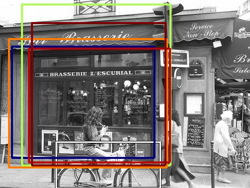
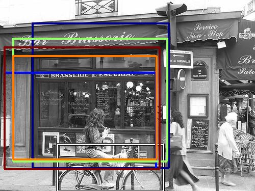
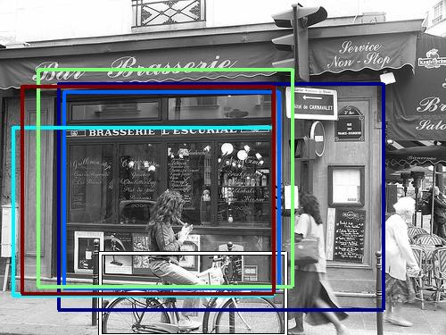

0.511035

0.532171

0.541375

0.607558

0.622771

0.637965

0.649670

0.704713

0.734069

0.745768
| Target image | 0.511035 | 0.532171 | 0.541375 | 0.607558 | 0.622771 | 0.637965 | 0.649670 | 0.704713 | 0.734069 | 0.745768 |
Target image |  2736.330566 |  1920.848389 |  1500.496826 |  1448.050781 |  1368.601929 |  1342.499023 |  1260.341919 |  1254.451416 |  1249.098877 |  1192.549438 |
Target image |  2176.356934 |  1543.695923 |  1501.734375 |  1488.952148 |  1458.531250 |  1254.874756 |  1205.952271 |  1182.799072 |  1181.706177 |  1175.334717 |
Target image |  1828.311523 |  1297.364868 |  1292.066162 |  1275.553101 |  1123.853882 |  1119.346680 |  1059.535889 |  1046.214233 |  1042.277710 |  1037.410645 |
Target image |  2560.377441 |  1649.299316 |  1576.783447 |  1415.792480 |  1125.618164 |  1117.406128 |  1091.633057 |  1049.825317 |  1027.660889 |  1027.521362 |